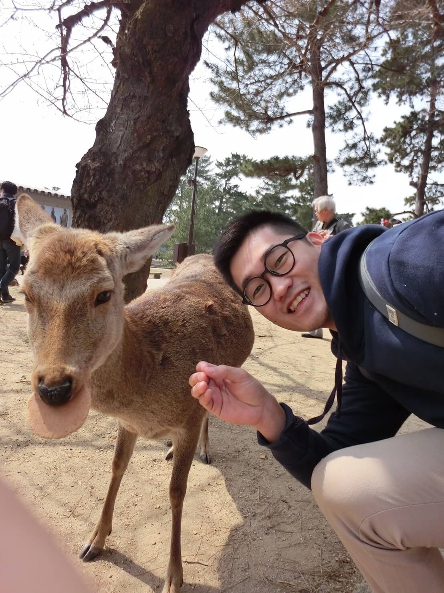

吳忠倫
CHUNG-LUN WU
User Experience Researcher
關於我
- 相信體驗設計的核心價值關聯所有行銷、企劃與設計
- 觀察在生活中的所有點滴並好奇為何如此設計與體驗
- 任何事情都會以UCD的方式作為首要方向考慮，以人為本也是我很注重的態度理念
- 不時的進入KICKSTARTER，贊助有趣且新奇的產品
工作目標
- 研究探討與分析使用者的使用行為
- 收集統整各種數據，使各階段的使用者了解大數據的變化
- 拉近與使用者的關係，使發揮到最大價值
- 透過使用者研究或服務設計方法，執行用戶體驗研究
- 期許成為一位優秀的UX Researcher
擅長做的事
- 擅於搜集數據、整理分析，並產生報表，進而產出優化產品的規劃
- 主導規劃企劃產品製成
- 推理邏輯力強，喜歡探索使用者行為及心理動機想法
- 擁有科學家精神，超級喜歡做實驗研究
- 對於細節要求，非常注重
擅長技術
- 前端 HTML5、CSS3、Javascript、jQuery
- 後端 PHP、MYSQL
- 監測分析 GA(EC)、GTM、GPI、GTMetrix、WebPagetest、Mixpanel、NewRelic
- API GA、Google+、Youtube、Facebook、LINE
- 網站系統 Wordpress、Discuz!
- 廣告 Google DFP、Google Adsense
- 管理工具 Asana、Trello、Google Sheets、Slack、Bitbucket、Plesk